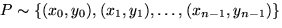

El segon i últim problema que volem tractar en aquest capítol és un problema al pla: la determinació de si un punt pertany o no a un polígon. Aquesta és una operació molt important i que ens cal resoldre amb robustesa. Aquí ens limitarem a donar una solució freqüent, però a la literatura trobareu d'altres amb avantatges i inconvenients en front d'aquesta.
Sigui doncs com abans un polígon fitat representat com una llista ordenada de vèrtexs, i sigui  un punt al pla. Volem determinar si Q rau a l'interior del polígon P o no. Com mostra la figura, hom pot considerar qualsevol raig (semirecta r) que emana del punt Q, i calcular les seves interseccions amb la frontera del polígon. Cada intersecció correspon a una transició de dins a fora o de fora a dins, i com el polígon està fitat, i per tant sabem que un punt prou llunyà és necessàriament fora, es conclou que el punt és dins si i només si hi ha un nombre senar d'interseccions (a l'exemple de la figura tres: els punts marcats en cercles vermells). Normalment es tria pel raig r una direcció paral·lela a un eix coordenat per a facilitar els càlculs.
A aquesta estratègia aparentment senzilla evident no li falten inconvenients, com passa sovint al dissenyar algorismes geomètrics, degut a l'existència de casos singulars. Com mostra la següent figura, quan el raig r passa justament per un vèrtex, hi ha casos en que la intersecció s'ha de comptar (el raig entra o surt) i casos en que no.
|
|
Una manera de solventar aquests problemes consisteix en:
D'aquesta manera a la figura el vèrtex de l'esquerra no es comptarà com cap intersecció (ja que correspon per totes dues arestes al vèrtex de màxima y), mentre que al cas del mig es comptara una intersecció (corresponent a l'aresta que està per sobre del raig, i que per tant inclou aquell vèrtex); al cas mostrat a la dreta es comptaran dues interseccions (cosa que no alterarà la paritat del resultat), corresponents a l'aresta esquerra i a l'aresta de la dreta (totes dues estàn per sobre el raig i per tant inclouen els vèrtexs que el raig travessa). L'aresta intermitja, perfectament horitzontal, s'ignora.
La figura no presenta, evidentment, tots els casos possibles, però amb llàpis i paper podeu convèncer-vos que en tots els casos l'estratègia comentada funciona correctament, alterant la paritat del comptatge sols quan el raig efectivament entra o surt del polígon.
En el cas 3D (determinar si un punt és interior a un poliedre), es
pot fer servir la mateixa idea, però caldrà tenir especial cura.
Ara en comptes de veure si interseca un segment, necessitarem saber
si interseca una cara del poliedre, és a dir un polígon però posat en
posició general. El procediment per fer-ho consisteix en calcular
primer la intersecció del raig amb
el pla de la cara, i a continuació caldrà determinar si la
intersecció trobada és dins o fora de la cara. La figura ens
mostra dos exemples. El raig dibuixat interseca el pla de la cara
superior, però la intersecció no és dins la cara, i també interseca
el pla de la cara lateral dreta, i la intersecció és, en aquest cas,
dins la cara. Observeu doncs que aquesta darrera determinació equival
a resoldre el mateix problema en una dimensió menys. Per tal de
fer-ho, hom tria la projecció més significativa, és a dir que
farem el càlcul de si el punt trobat d'intersecció al pla és dins o
fora de la cara projectant tant la cara com el punt sobre el pla
coordenat en que la cara es veu més grossa. Per fer-ho, hi ha prou amb
calcular la normal al pla de la cara, i mirar
quina de les seves components és la més grossa. Si per exemple fos la
y, aleshores projectarem sobre el pla XZ, descartant la
coordenada y dels punts.